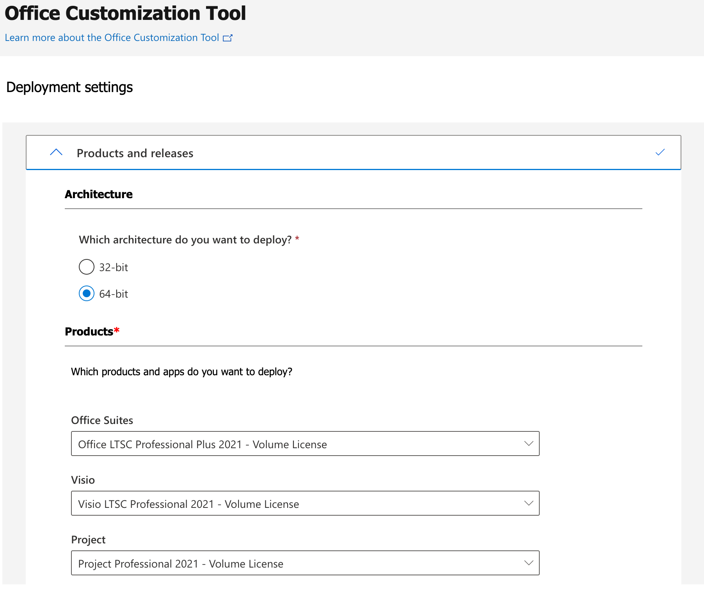
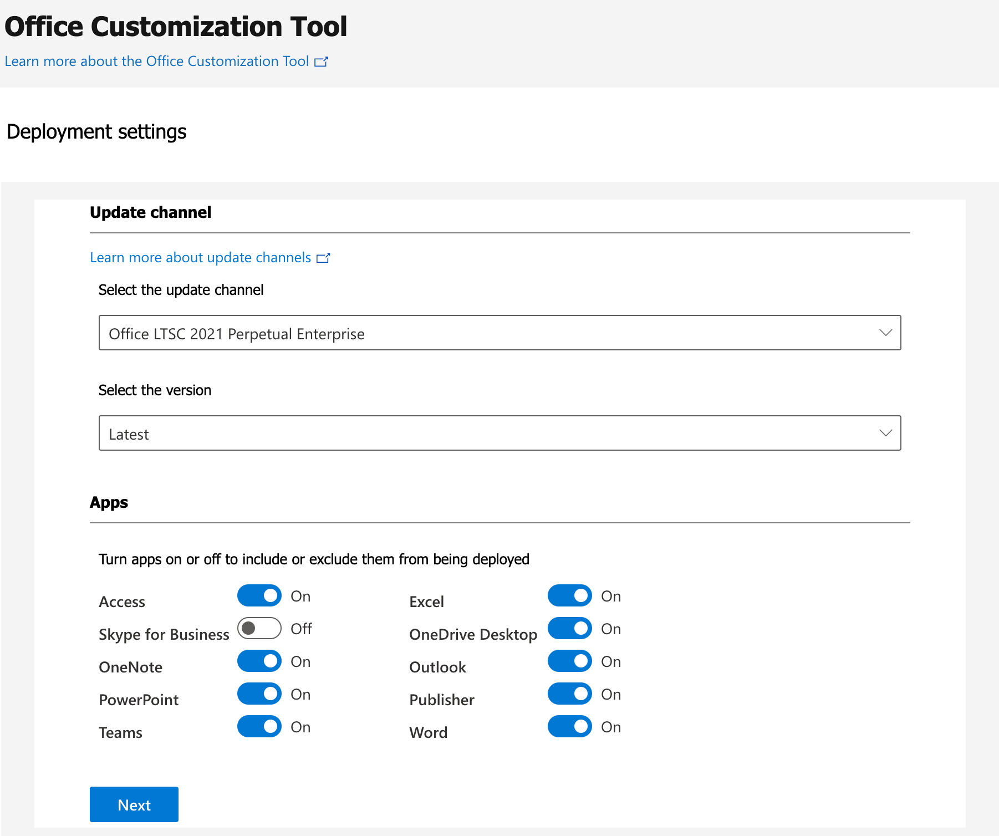
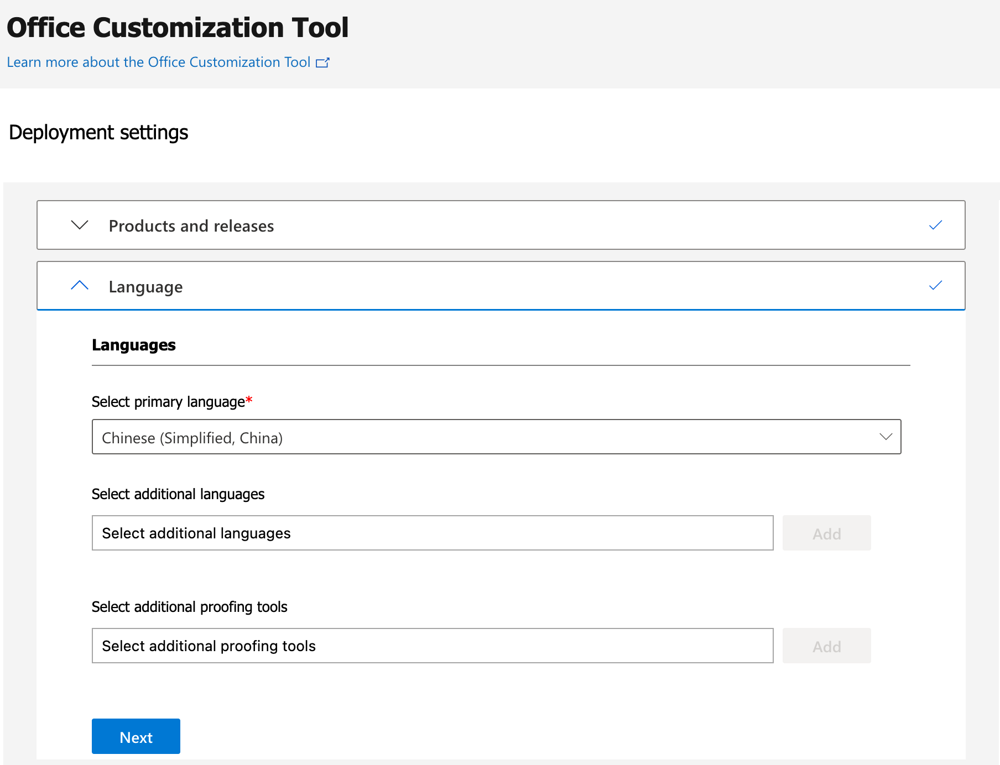
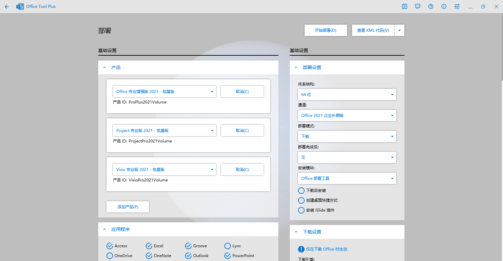
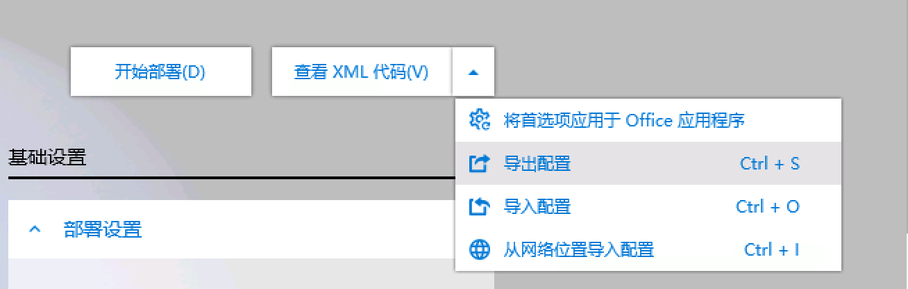

请访问原文链接：如何创建 Office LTSC 2021 VL (批量许可) 版本的安装 ISO 查看最新版。原创作品，转载请保留出处。
作者主页：sysin.org
Office LTSC 2021 发布
2021 年 9 月 16 日，微软正式发布了支持 Office 2021 的部署工具（Office Deployment Tool），这意味着 Office 2021 已经正式发布，当然系统要求仅支持 Windows 10 和 Windows 11，Office 2021 具体带来了哪些新功能，可以查阅 Office 官网 Office 2021 中的新增功能 一文。Office 2021 与 Office 2019 开始改变了以往的安装方式一样，仅支持 C2R（Click-To-Run）安装方式，不再提供 ISO 安装文件。Click-To-Run 可以确保每次下载安装的程序都是最新发行版，但缺点是用户会面临更长的安装（下载）时间，安装的具体版本也有一定的不确定性 (sysin)。本文描述创建自定义 Office 2021 离线安装包的方法，并提供成品 iso 和相关工具下载。
Office 2021 for Mac VL 仍然是单个 PKG 安装文件，仍然是与 Office 365 共享安装程序，通过许可证来区分，目前 Office 2019 也是共享该相同的安装程序。
Office 365 Business Pro Download
本站下载：Microsoft Office LTSC 2021 for Mac (Microsoft 365) 16.92 Universal
1. 软件准备
1.1 Office 部署工具
从 Microsoft 下载中心免费下载 Office 部署工具。
下载后解压得到 setup.exe 文件，备用，其他文件忽略。
1.2 Office Tool Plus
下载 Office Tool Plus，选择 “包含框架 (推荐)” 版本，当前已经是 8.x 版本了。
1.3 Office 2013-2021 C2R Install
来自俄罗斯的 Office 下载安装和激活工具。
1.4 HEU KMS Activator（微信公众号: HEU168）
软件功能如其名。
2. 创建 configuration.xml
有三种方式来创建配置文件：
- 文本编辑器手动编辑，前提是熟悉各项配置参数或者参考现有配置。
- 使用 Office 自定义工具 (OCT)
- 使用 Office Tool Plus (OTP)
可以使用文本编辑器来创建 configuration.xml（如果熟悉各项配置参数），建议使用 Office 自定义工具 (OCT)。
按照页面提示，配置好后下载 configuration.xml 文件，备用。



注意：使用 OCT 创建的配置文件中包含 PIDKEY 选项，OInstall 无法识别，需要删除，例如：
<Product ID="ProPlus2019Volume" PIDKEY="NMMKJ-6RK4F-KMJVX-8D9MJ-6MWKP">
或者使用 Office Tool Plus (OTP) 来创建配置文件，在下一步下载离线包的时候导出配置文件即可。


3. 下载 Office 离线安装包
3.1 使用 Office Deployment Tool 下载 Office 离线安装包
Office Deployment Tool 帮助如下：
1 | setup.exe /h |
下载离线安装包命令如下：
setup /download configuration.xml
configuration.xml 为步骤 2 创建的配置文件。
Office Deployment Tool 下载的时候是没有进度指示，相对较慢，可以考虑用 OTP 替代下载。
3.2 使用 Office Tool Plus (OTP) 下载 Office 离线安装包
使用 OTP v8（双击 RunMe.bat），点击 “部署”
左侧选项：
- 产品：这里分别添加了 Office、Project 和 Visio
- 应用程序：取消勾选某些不需要的组件，比如 Onedrive
- 语言：简体中文 (中国)
- 其他选项根据需要选择，这里不再赘述
右侧几个选项选择如下：
- 通道：Office 2021 企业长期版
- 体系结构：x64
- 部署模式：下载
- 部署完成后：无
- 安装模块：Office 部署工具
点击右上角的 “开始部署” 按钮，下载开始。
（可选）版本号：查询版本号可以查看具体版本号和创建时间
下载完成后，在 OTP 当前目录下生成一个 Office 文件夹，接近 2G 大小（本次下载的为 1.86G），可以将 OTP 文件夹将作为 ISO 文件的根目录 (或者将该 Office 文件夹移动到特定文件夹作为根目录，例如：D:\Office2021 下)
也可以使用 Office 2013-2021 C2R Install 下载离线安装包。
4. 创建安装程序
4.1 使用 Office Deployment Tool 安装
将 setup.exe 和 configuration.xml 复制到离线安装包 Office 文件夹下。
创建一个批处理文件 setup.bat，内容为：setup /configure configuration.xml
之后双击 setup.bat 就可以按照配置离线安装。
该种方式相对有点官方风格。
4.2 使用 Office 2013-2021 C2R Install
解压后将 OInstall.exe 复制到要创建 ISO 的根目录下 (例如：D:\Office2021)
双击运行 OInstall.exe，将自动生成 files 文件夹，自动下载必要的文件 (sysin)，将步骤 1 和 2 的 setup.exe 和 configuration.xml 文件复制到 files 文件夹下即可。
该种方式可以自定义安装组件，不限于配置文件的定义。
5. 创建 ISO 镜像
使用 UltraISO、PowerISO 等第三方软件，具体操作略。
可以选择只打包 Office 文件夹，使用官方的安装工具，也可以打包整个上述定义的根目录，包含上述工具。
6. 安装
挂在 iso 文件，双击 OInstall.exe 进行安装。或者双击 setup.bat 使用官方工具进行安装。
Windows Defender 可能有提示，和谐软件缘故。
7. configuration.xml 示例
1 | <Configuration> |
8. 下载
提供上述工具和 Office LTSC 2021 VL 版本下载：
百度网盘链接：https://pan.baidu.com/s/1KWCpUA9Ifyno0MVcuozddQ?pwd=3s0s
更多：Windows 下载汇总

文章用于推荐和分享优秀的软件产品及其相关技术，所有软件默认提供官方原版（免费版或试用版），免费分享。对于部分产品笔者加入了自己的理解和分析，方便学习和研究使用。任何内容若侵犯了您的版权，请联系作者删除。如果您喜欢这篇文章或者觉得它对您有所帮助，或者发现有不当之处，欢迎您发表评论，也欢迎您分享这个网站，或者赞赏一下作者，谢谢！
 支付宝赞赏
支付宝赞赏
 微信赞赏
微信赞赏
赞赏一下